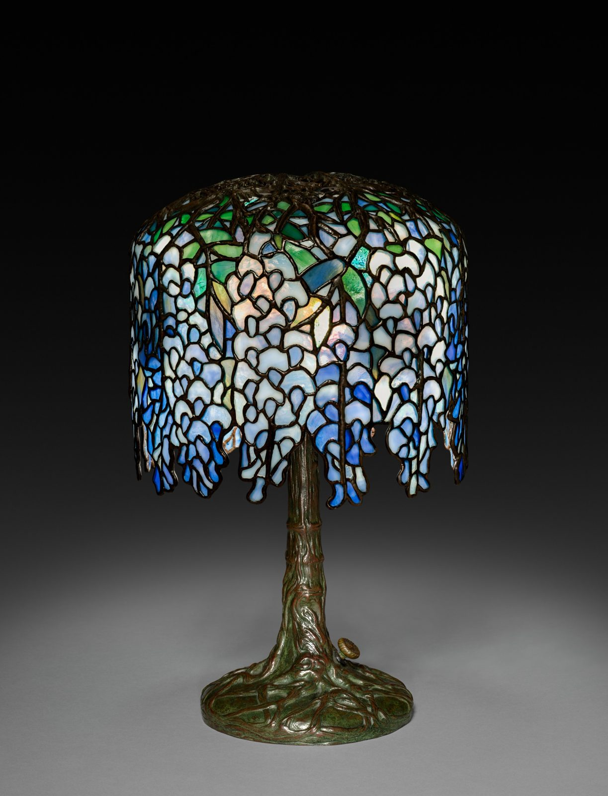

References / Product / 94
“Pony” Wisteria lamp, Tiffany Studios
Clara Wolcott Driscoll’s leaded-glass lamp for Tiffany Studios: a shade of hanging wisteria blossoms on a bronze base cast as a gnarled trunk and roots.
- Source
- Cleveland Museum of Art: “Pony” Wisteria Lamp, 2018.261
- Creator
- Clara Wolcott Driscoll, for Tiffany Studios
- Made
- c. 1902–10
- Style
- Art Nouveau (agent-proposed, not yet reviewed by a person)
- Moods
- Organic, luminous, romantic
- Evidence
- Downloaded and inspected the Cleveland Museum of Art open-access image of object 2018.261 (2598 × 3400 px print file). Read the object record through the museum’s open-access API.
- Reviewed
- Rights
- Open license, stored. License: CC0-1.0. Rights policy
Context
The Cleveland Museum of Art records the lamp as leaded glass and bronze, 43.2 cm high and 26.7 cm in diameter, c. 1902–10, designed by Clara Wolcott Driscoll (1861–1944), Tiffany’s chief lamp designer, for Tiffany Studios, New York. CMA 2018.261.
The museum’s text calls Louis Comfort Tiffany’s lamps his contribution to “this new art movement, termed the Art Nouveau”, says that the base rises up to form the branches of the vine, and states that the Wisteria lamp won a grand prize for Tiffany Studios at the 1902 international exposition in Turin. CMA 2018.261.
Observed
- The shade is a dome of hundreds of small pieces of glass, each outlined by a dark bronze-coloured lead line.
- Blossom clusters in pale lavender, white, and mid-blue hang down from the rim in uneven, pointed drops, so the lower edge of the shade is irregular instead of a straight line.
- Green leaves sit near the crown of the shade. An open bronze filigree of branches covers the top.
- The base is a green-brown bronze trunk with bark texture. It spreads at the foot into a flat, rooted disc.
- The museum photograph shows the lamp against a dark gray ground with light falling from above.
Why it belongs
The lamp shows the Art Nouveau idea that ornament and structure are one: the stem holds the shade, and the shade is the flowering plant.
The palette is cooler than the posters of Paris: blue and lavender over moss-green bronze. The dark lead lines play the same part as the outline in a lithograph.
Borrow
Let a decorative edge follow the motif, for example a hanging fringe of blossom shapes instead of a straight bottom border.
Outline every coloured shape with the same dark line, so a dense pattern stays readable.
Measured
Machine-extracted by tools/image-traits.py on . Full measurement.
- Mean chroma
- 0.02
- Palette
- #040404 34%
- #1f201f 12%
- #868786 6%
- #929392 6%
- #111211 6%
- #6c6d6c 5%
- #7a7c7b 5%
- #333433 3%



share_license_status: CC0). The lamp is an American work made and sold before 1929, so it is in the public domain in the United States, its country of origin. License: CC0-1.0. Open the image for full size.